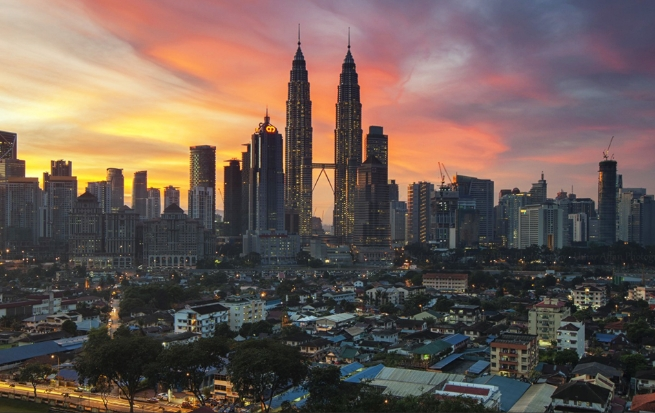

KLCC, or Kuala Lumpur City Centre, is a prominent area in Kuala Lumpur, Malaysia. It's best known for the Petronas Twin Towers, which are among the tallest buildings in the world. The area also includes a shopping mall called Suria KLCC, office buildings, hotels, a park, and a mosque. KLCC Park, designed by the renowned Brazilian architect Roberto Burle Marx, offers a lush green space amidst the urban environment, providing a serene escape with stunning views of the Twin Towers.
